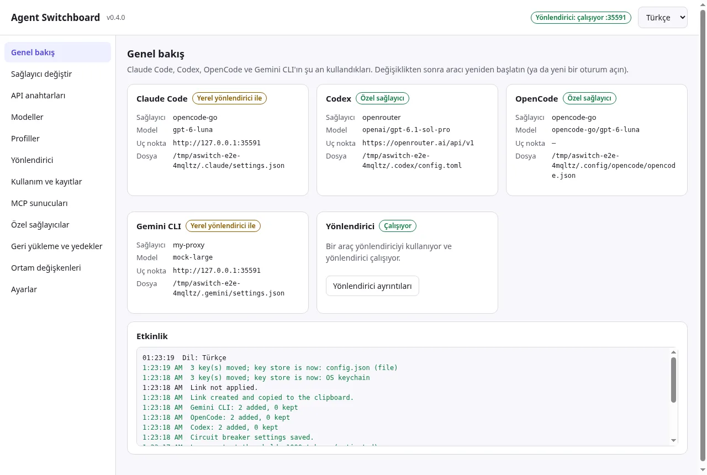
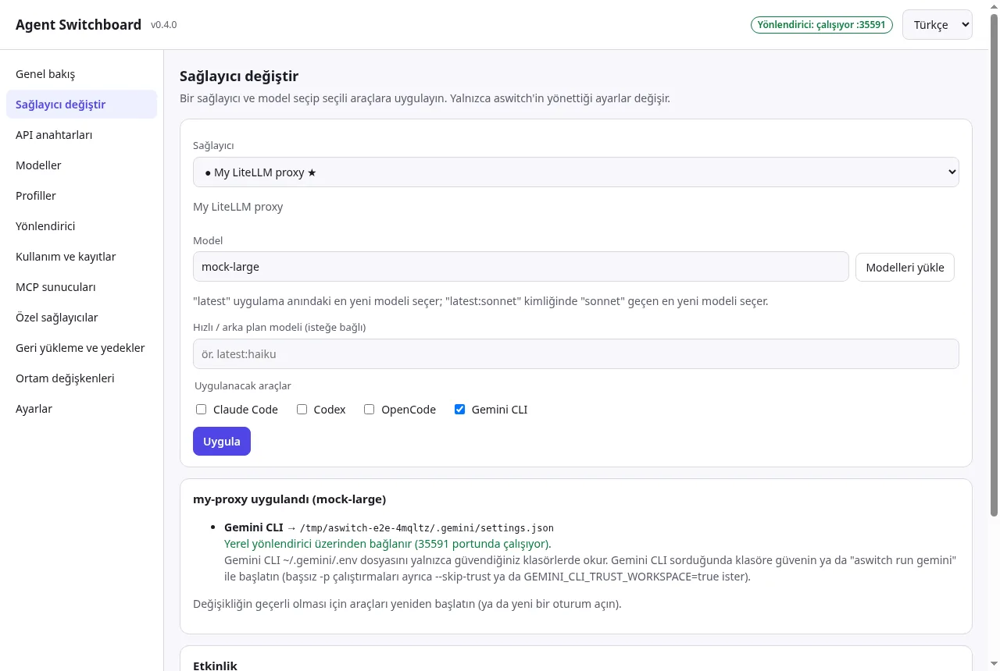
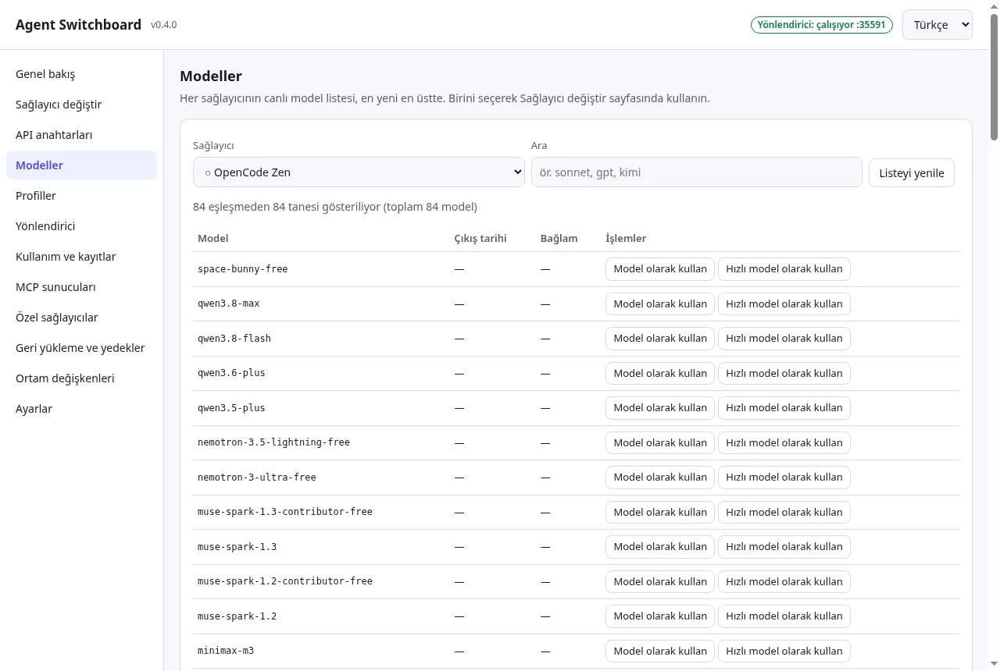
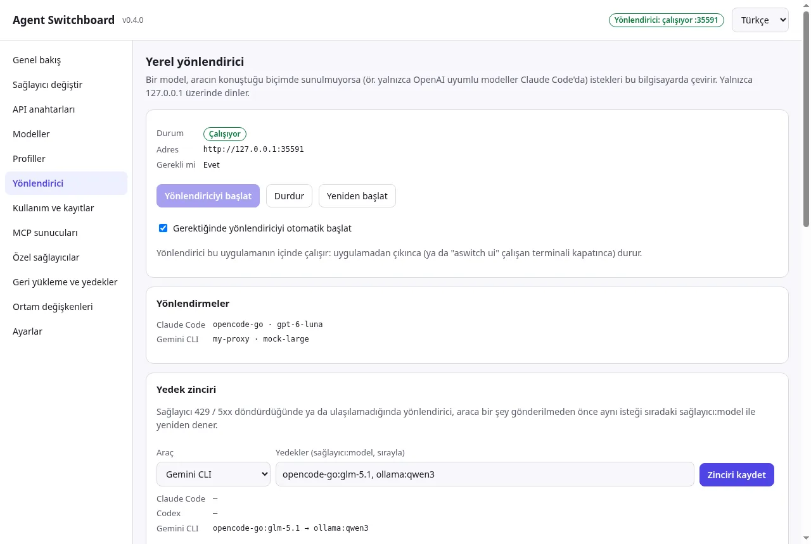
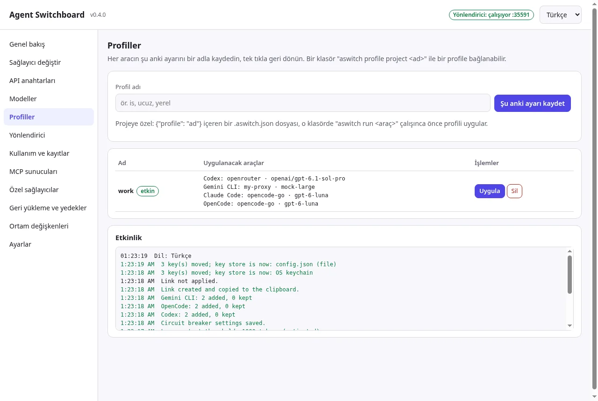
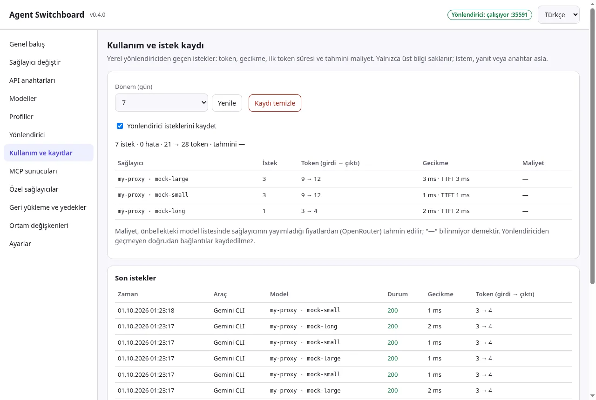
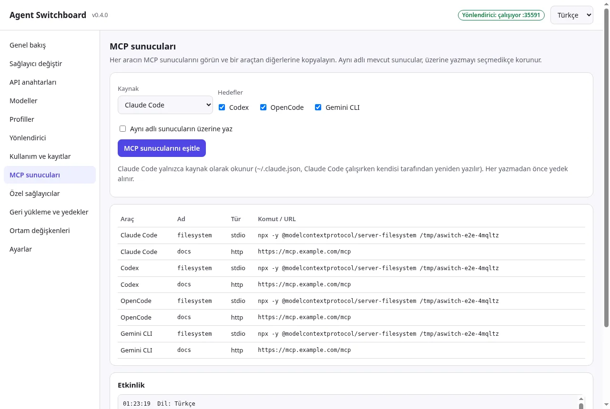

Sağlayıcı değiştir
18 yerleşik sağlayıcı + eklediğiniz her OpenAI ya da Anthropic uyumlu uç nokta. Dört araç tek yerde.
Claude Code, Codex, OpenCode ve Gemini CLI'ı OpenRouter, DeepSeek, Kimi, GLM, Ollama ya da kendi uç noktanıza bağlayın. Canlı listeden en yeni modeli seçin; aboneliğinize ya da orijinal dosyalarınıza tek tıkla dönün.

Her ajan ayarlarını başka bir dosyada, başka bir biçimde tutar. Agent Switchboard bu işi sizin yerinize, güvenle yapar.
settings.json, Codex TOML, OpenCode JSON, Gemini .env…Masaüstü uygulaması ve sıfır bağımlılıklı CLI aynı çekirdeği, aynı dosyaları ve aynı yedekleri kullanır.
18 yerleşik sağlayıcı + eklediğiniz her OpenAI ya da Anthropic uyumlu uç nokta. Dört araç tek yerde.
Kurulumunuzu profil olarak kaydedin, tepsiden tek tıkla geçin; proje klasörünü bir profile bağlayın.
Her sağlayıcının /models uç noktasından. latest yazın, uygularken en yeni eşleşmeye çözülsün.
Araçlar, görseller, akış ve düşünme/akıl yürütme dahil. Yalnızca 127.0.0.1 üzerinde dinler.
429/5xx’te sıradaki sağlayıcıya geçer; ağırlıklı ya da sıralı dağıtım ve devre kesici.
Token, gecikme, ilk token süresi ve tahmini maliyet. Yalnızca meta veri; asla istem ya da anahtar.
Dört aracın MCP sunucularını tek tabloda görün, birinden ötekilere kopyalayın.
Anahtarlar yerelde ya da işletim sistemi anahtar zincirinde. Resmî PKCE ile OpenRouter girişi.
Son 50 zaman damgalı yedek; aboneliğe (official) ya da orijinal dosyalara (restore) dönüş.
Kaynak: proje README’si. Node 18/20/22 ile macOS, Windows ve Linux üzerinde test edilir.
Tümü otomatik Electron testiyle, demo anahtarlarla korumalı bir ev klasöründe alındı. Dil seçiminize göre değişir.






Sağlayıcı anahtarınızı yapıştırın ya da tarayıcıyla OpenRouter’a giriş yapın.
Canlı listeden seçin ya da yalnızca latest yazın.
Bir ya da dört aracın hepsine. Gerekirse yerel yönlendirici otomatik başlar.
Resmî girişi kullan ya da Orijinalleri geri yükle. Temalarınız, izinleriniz, MCP’leriniz olduğu gibi kalır.
Son sürüm: v0.4.1. Her sürümde SHA256SUMS.txt bulunur.
Sisteminize uygun dosyayı indirin. İşletim sisteminize göre öneri işaretlenir.
Henüz kod imzalı değil. Windows: “Daha fazla bilgi → Yine de çalıştır”. macOS: uygulamaya sağ tıklayın → Aç. “Hasarlı” derse: xattr -dr com.apple.quarantine "/Applications/Agent Switchboard.app". Linux AppImage için bazı dağıtımlarda libfuse2 gerekir. Masaüstü uygulaması macOS 13+ ister.
Node.js 18 veya üstü gerekir. Sıfır bağımlılık.
# macOS / Linux / Windows
npm install -g github:cumabozkurt/agent-switchboard
aswitch --version# İlk geçiş
aswitch key set openrouter
aswitch models openrouter --filter claude
aswitch use openrouter --model latest:claude-sonnet --tools claude
aswitch statusAynı arayüzü tarayıcıda açmak için: aswitch ui (yalnızca 127.0.0.1, tek kullanımlık jeton).
git clone https://github.com/cumabozkurt/agent-switchboard cd agent-switchboard npm link
Kaldırma: önce aswitch restore, sonra npm rm -g agent-switchboard (ya da uygulamayı kaldırın) ve ~/.agent-switchboard klasörünü silin.
Claude Code’da Kimi’yi, Codex’te DeepSeek’i deneyin; yapılandırma dosyasıyla uğraşmadan.
Profilleri dışa aktarın, anahtar içermeyen aswitch:// paylaşım bağlantılarıyla kurulumu dağıtın.
Ollama ve LM Studio’yu Claude Code ve Codex’e bağlayın; yönlendirici protokolü çevirir.
aswitch official.Ücretsiz indirin, beş dakikada ilk geçişi yapın, istediğiniz an tek tıkla geri dönün.